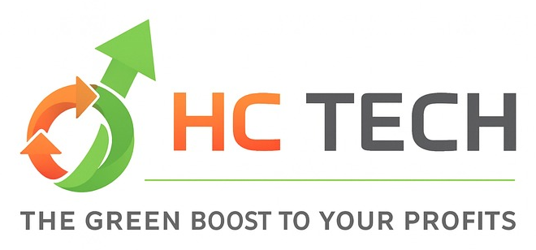

HCTECH installe gratuitement des équipements de récupération de vapeurs d'essence dans les stations-service et partage les revenus. Machines financées en leasing — chacune s'autofinance par ses propres revenus. Zéro investissement pour la station.
Les carburants sans plomb sont extrêmement volatils. Une partie significative de l'essence en cuve se transforme spontanément en gaz — et s'échappe dans l'atmosphère. C'est à la fois une pollution majeure et une perte financière directe pour chaque station.
Les vapeurs d'essence contiennent des COV classés cancérogènes. Ils participent à la formation du smog et à la dégradation de la couche d'ozone. Chaque station-service en émet des tonnes par an.
Entre 3 et 7 litres sont perdus par volatilisation pour chaque 1 000 litres stockés. Pour une station vendant 12 000 L/jour, c'est 36 à 84 litres perdus chaque jour — de l'essence qui s'évapore dans l'air.
Les émissions surviennent lors du déchargement des camions-citernes, tout au long du stockage (variations thermiques), et à chaque ravitaillement de véhicule. Le problème est continu, 24h/24.
L'Europe impose des normes strictes (Phase I & II). En Tunisie et en Afrique, aucune réglementation n'existe aujourd'hui. Mais les directives arrivent — les stations qui anticipent seront déjà conformes.
Notre équipement s'installe directement sur les cuves souterraines de la station. Il aspire les vapeurs, les liquéfie par condensation frigorifique, et réinjecte l'essence récupérée dans la cuve. Zéro rejet. Zéro perte.
Usine certifiée ISO. Soutien de l'Université de Tongji et du laboratoire ENCONGLOBAL. Machines en acier inoxydable 304. Technologie brevetée.
Certification anti-explosion obligatoire pour tout équipement en zone à risque d'inflammation. Extincteurs automatiques intégrés. Aucune pression dangereuse dans la cuve.
Le gérant, HCTECH et GEKO ont accès simultanément aux données : quantités récupérées, pression, températures, historique. Base transparente pour le partage des revenus.
Aucun arrêt de la station, aucun creusement. L'équipement est non-intrusif et se connecte aux évents existants. Durée de vie garantie ≥ 10 ans, consommation électrique : 4 kW.
Un prototype a été installé et opéré en conditions réelles à Tunis. Les résultats ont été certifiés par un cabinet externe indépendant :
| Critère | Résultat | Statut |
|---|---|---|
| Taux de récupération | Entre 3/1000 et 7/1000 | Validé |
| Sécurité opérationnelle | Zéro incident sur toute la période | Validé |
| Fiabilité mécanique | Zéro panne enregistrée | Validé |
| Application connectée | Données app = mesures physiques station (cohérence 100 %) | Validé |
| Installation | Réalisée en 24h sans arrêt de la station | Validé |
| Décision SNDP | Commission interne : accord d'équipement + cofinancement 27 000 DT | Validé |
HCTECH ne vend pas la machine et ne mobilise pas de gros capital pour l'acheter. Chaque machine est financée en leasing (≈ 12 %/7 ans) et s'autofinance par ses propres revenus. La station, elle, ne paie rien et touche 40 % des revenus.
| Paramètre | Calcul | Valeur |
|---|---|---|
| Vente journalière de la station | Hypothèse station moyenne | 12 000 L/jour |
| Taux de récupération retenu | Médian entre 3/1000 et 7/1000 (validé terrain) | 5/1000 |
| Essence récupérée / jour | 12 000 × 5/1000 | 60 L/jour |
| Prix du litre (TTC Tunisie 2026) | Prix pompiste administré (SNDP) | 2,525 DT |
| Valeur brute récupérée / machine / an | 60 L × 2,525 DT × 365 j | 55 297 DT |
| Part HCTECH (60 %) | 55 297 × 0,60 | 33 178 DT/an |
| Part Station (40 %) | 55 297 × 0,40 | 22 119 DT/an |
| Coût machine all-in (HT) | 18 000 $ × 2,95 + import 2,5 % + install. 3 500 | 57 928 DT |
| Leasing machine (12 %/7 ans) | Mensualité × 12 | 12 271 DT/an |
| Maintenance + internet | 120 DT/mois × 12 | 1 440 DT/an |
| Marge nette HCTECH / machine / an | 33 178 − 12 271 − 1 440 | +19 468 DT |
| Scénario | Taux | Valeur brute/an | Part HCTECH (60 %) | Marge nette HCTECH | Part Station/mois |
|---|---|---|---|---|---|
| Pessimiste | 3/1000 | 33 178 DT | 19 907 DT | +6 196 DT | 1 106 DT |
| Réaliste (retenu) | 5/1000 | 55 297 DT | 33 178 DT | +19 468 DT | 1 843 DT |
| Optimiste | 7/1000 | 77 416 DT | 46 450 DT | +32 739 DT | 2 581 DT |
Le marché primaire est clair et circonscrit : les stations-service tunisiennes actives, sous 5 enseignes principales. L'exclusivité territoriale pour toute l'Afrique constitue un actif stratégique de premier plan pour la phase 2.
| Enseigne | Nb stations | Mode de décision | Statut HCTECH |
|---|---|---|---|
| AGIL (SNDP) | 280 | Décision SNDP + kiosque/kiosque. SAGES (filiale, 20 stations) : décision directe | Accord SNDP existant |
| Total Energies | 185 | Décision centrale (head-quarters) | 80 % du processus effectué |
| OLA Energy | 178 | Décision centrale | 80 % du processus effectué |
| Vivo Shell | 167 | Décision centrale | 80 % du processus effectué |
| Staroil | 95 | Mixte | À approcher |
Une analyse mondiale approfondie a été menée sur 12+ fabricants (Europe, USA, Chine). Verdict : aucun concurrent direct en Tunisie/Afrique sur le modèle revenue share, et un rendement GEKO supérieur à la plupart des acteurs comparables.
Les projections sont construites sur le scénario réaliste central (5/1000) et le financement par leasing. Comme chaque machine s'autofinance, la société est rentable dès la première année et la trésorerie reste positive en permanence.
| Rythme | An 1 | An 2 | An 3 | An 4 | An 5 | An 6 | An 7 |
|---|---|---|---|---|---|---|---|
| Nouvelles machines | 28 | 28 | 28 | 28 | 28 | 28 | 28 |
| Parc cumulé | 28 | 56 | 84 | 112 | 140 | 168 | 196 |
| Poste (DT) | An 1 | An 2 | An 3 | An 4 | An 5 | An 6 | An 7 |
|---|---|---|---|---|---|---|---|
| Parc machines | 28 | 56 | 84 | 112 | 140 | 168 | 196 |
| CA HCTECH (60 %) | 541 916 | 1 537 105 | 2 620 763 | 3 798 839 | 5 077 634 | 6 463 828 | 7 964 497 |
| (−) Leasing machines | 200 425 | 544 012 | 887 598 | 1 231 185 | 1 574 771 | 1 918 358 | 2 261 944 |
| (−) OPEX machines | 23 520 | 63 840 | 104 160 | 144 480 | 184 800 | 225 120 | 265 440 |
| (−) Masse salariale | 75 504 | 111 978 | 170 577 | 234 718 | 242 758 | 267 919 | 287 551 |
| (−) Loyer + frais généraux | 38 400 | 40 704 | 43 146 | 45 735 | 48 479 | 51 387 | 54 471 |
| (−) Leasing véhicule | 18 685 | 18 685 | 18 685 | 18 685 | 18 685 | 0 | 0 |
| Résultat d'exploitation | 185 381 | 757 885 | 1 396 596 | 2 124 036 | 3 008 140 | 4 001 043 | 5 095 091 |
| (−) Impôt (IS 25 % + CSS 3 %) | 51 907 | 212 208 | 391 047 | 594 730 | 842 279 | 1 120 292 | 1 426 625 |
| Résultat net | 133 474 | 545 677 | 1 005 549 | 1 529 306 | 2 165 861 | 2 880 751 | 3 668 465 |
| Résultat net cumulé | 133 k | 679 k | 1 685 k | 3 214 k | 5 380 k | 8 261 k | 11 929 k |
Le capital social (300 000 DT) est apporté intégralement par Nessim Mami. La politique de dividendes le rembourse en priorité absolue — capital + prime de risque de 20 % — avant tout partage avec les autres associés.
| Actionnaire | % parts | Apport | Dividendes 7 ans | Nature |
|---|---|---|---|---|
| Nessim Mami | 40 % | 300 000 DT (cash) | 3,56 M DT | Investisseur — porte 100 % du capital |
| Ali Ben Hamoud | 25 % | Industrie | 2,00 M DT | Directeur Technique (relation GEKO) |
| Mohamed Lamine Belajouza | 25 % | Industrie | 2,00 M DT | CEO (réseau pétrolier) |
| Nazeh Ben Ammar | 10 % | Industrie | 0,80 M DT | Relations stratégiques |
Nessim encaisse 100 % des dividendes jusqu'à récupérer son capital + une prime de risque de 20 % (360 k DT), atteint dès la fin de la deuxième année.
Sur 7 ans, Nessim perçoit 3,56 M DT — soit 11,9× son capital initial, pour un taux de rendement interne d'environ 82 %.
Une fois Nessim remboursé, tous les associés partagent au pro-rata. 70 % du résultat est distribué, 30 % conservé en réserve (fonds propres solides pour le leasing).
Sur 7 ans, 8,35 M DT de dividendes versés, et ~7,9 M DT de trésorerie conservée — la société reste très liquide.
Le choix du leasing supprime le besoin d'un gros emprunt bancaire. Le capital de 300 k DT couvre le fonds de roulement (premiers mois de structure avant que le parc monte en charge). Les machines, elles, sont financées par leasing et remboursées par leurs propres revenus.
Apporté intégralement par Nessim Mami. Sert de fonds de roulement : il finance les premiers mois de charges fixes avant que les revenus du parc prennent le relais.
Chaque machine est financée à 100 % par leasing (≈ 12 %/7 ans). Sa part de 60 % (33 178 DT/an) couvre largement le loyer (12 271 DT) et la maintenance.
Leasing 12 %/5 ans (~18 685 DT/an), pour la maintenance et les déplacements terrain.
La simulation mensuelle (84 mois) montre une trésorerie minimale de +278 k DT : le capital de 300 k suffit, sans aucune dette bancaire.
HCTECH ne part pas de zéro. Les contacts sont établis, la machine test est opérationnelle, et la SNDP a formalisé son soutien. Le modèle revenue share + leasing permet de convertir l'intérêt existant en contrats signés sans frein financier.
Relancer VIVO SHELL, OLA Energy et TOTAL (80 % du processus déjà effectué). Signer les conventions de revenue share. Mettre en place le leasing. Installer la première vague de 14 machines dès le mois 3 (acheminement Corée).
+14 machines tous les 6 mois. Collecter les données de performance réelles (rapports mensuels par station). Rembourser intégralement le capital de Nessim dès l'An 2.
Activer les accords-cadres avec les enseignes. Recruter des techniciens (1 pour 48 machines). Produire le premier bilan carbone consolidé (argument ESG pour les majors).
~36 % du marché adressable tunisien équipé. Préparer l'expansion africaine (phase 2). HCTECH devient l'opérateur de référence régional sur la récupération des COV en station-service.
HCTECH associe une expertise technique pétrochimique, un réseau commercial établi en Tunisie et en Afrique, et une capacité stratégique. Chaque associé apporte une dimension irremplaçable.
Ingénieur pétrochimie formé en Chine. Initiateur du projet. Relation directe avec GEKO. Mandarin courant — interface avec le fabricant coréen.
Gestion et développement commercial. Réseau pétrolier tunisien (SNDP, Total, OLA). Liens établis en Algérie et Afrique subsaharienne via l'écosystème startup.
Apporte 100 % du capital social. Réseau Afrique et Golfe. Accélérateur du déploiement sur les marchés africains et dans les pays du Golfe (Oman, Qatar, EAU).
Réseau institutionnel tunisien. Facilitation des accès aux décideurs des enseignes pétrolières et des partenaires financiers.
Accompagnement stratégique et financier de l'équipe associés. Structuration du Business Plan, modélisation financière et positionnement investisseur.
Tout business plan crédible doit adresser les risques honnêtement. Voici les principaux scénarios défavorables et les mesures prévues pour les absorber.
| Risque | Proba. | Impact | Mitigant |
|---|---|---|---|
| Taux de récupération < 3/1000 | Faible | Moyen | Prototype validé entre 3 et 7/1000. Même à 3/1000, la marge reste positive (+6 196 DT/machine après leasing). Les contrats indexent le partage sur les mesures réelles (application). |
| Défaillance de GEKO (fournisseur unique) | Moyenne | Très élevé | Risque déjà matérialisé (COVID 2020). Mitigants : stock tampon de 2-3 machines, contrat d'exclusivité avec pénalités, exploration d'un second fournisseur dès l'An 3. |
| Refus de financement leasing | Faible | Moyen | Chaque machine génère une marge couvrant 1,6× son loyer — dossier solvable. Les contrats revenue share signés constituent une garantie de flux. 30 % des bénéfices conservés renforcent les fonds propres. |
| Hausse du taux de leasing | Moyenne | Faible | Verrouiller le taux à la signature de chaque contrat. La marge de +19 468 DT/machine absorbe une hausse de plusieurs points sans difficulté. |
| Chute du prix du carburant | Très faible | Moyen | En Tunisie, les prix sont administrés et en hausse tendancielle (+4,6 %/an sur 10 ans). Clause d'indexation dans les contrats station si le prix varie de >15 %. |
| Cycle de vente plus long que prévu | Moyenne | Faible | 3 enseignes intéressées à 80 %. Le capital de 300 k couvre la structure le temps de signer. Le déploiement s'ajuste au rythme réel des signatures. |
La technologie est validée. Les contacts sont établis. Le modèle leasing rend le déploiement autofinancé et rentable dès l'An 1. HCTECH cherche ses partenaires pour accélérer le déploiement et conquérir le marché tunisien avant la concurrence.
📩 Contacter l'équipe 🥊 Analyse concurrentielle